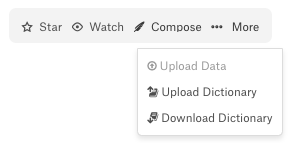
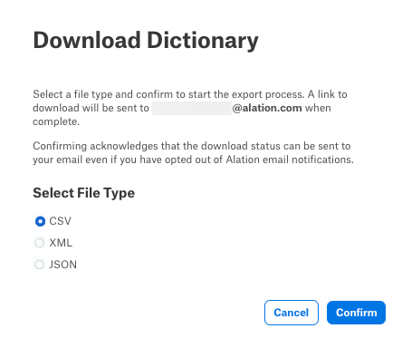
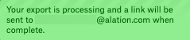
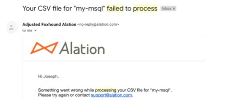

Download a Data Dictionary¶
Alation Cloud Service Applies to Alation Cloud Service instances of Alation
Customer Managed Applies to customer-managed instances of Alation
A data dictionary in Alation is a consolidated summary of all titles, descriptions, and custom field values that exist for a data source and its child data objects. It is a file that is generated on demand and includes all the information about this data source that has been added to the catalog by users.
Note
Data dictionaries are only available for RDBMS data sources, that is, sources that connect Alation to databases.
To export this information for analysis, you can use the data dictionary download feature. You can also use a data dictionary download as a first step in bulk-updating the data source information. You can upload a data dictionary from a source file, either created from scratch or from an edited downloaded file, to complete the bulk-update.
You can download a data dictionary at the data source, schema, or table level. For example, you can download a data dictionary for one schema and its child tables or one table and its child columns. There is no ability to download the dictionary for one single data object without child objects if it has them.
Download a Dictionary¶
To download a data dictionary:
Sign in to Alation and open the catalog page of a data source. If you want to download the complete data dictionary for this data source and all its child data objects, download from the data source page. If you need the data dictionary for one particular child data object (for example, one of the schemas or tables), then navigate to the catalog page of this data object and download from there.
In the upper-right corner, click More, and then click Download Dictionary:
The Download Dictionary dialog opens.
In the dialog, select one of the available file formats—CSV, XML, or JSON—and click Confirm. The download occurs asynchronously; a message appears informing you that the data dictionary is being processed and that an email confirmation will be sent when the data dictionary is ready for download:
If you already have a download in progress, an alternative message appears informing you of that fact:
When the data dictionary is ready for download, you receive an email containing a link to the prepared data dictionary. Click the link. If you are already signed in to Alation, the file is downloaded. If you are not signed in to Alation, the sign-in page opens when you click the link. The download occurs only after you sign in. The file is downloaded using the browser.
Failure During a Data Dictionary Download¶
If there is a problem with the download job, an email notification is sent to the user as depicted in the screenshot.
{kind=link}
Potential Issues During Data Dictionary Download¶
A few issues that might occur while accessing the data dictionary download are the following:
The download file is stored on the server for only five days. If the user has signed in to Alation and clicked the data dictionary download link after five days, the download file will not exist and there will be a “link expired” error message.
If the user has signed in to Alation and clicked the download link and the file exists, but the signed-in user is different from the user who requested the download, the following warning is displayed: “You need access to view this page”.
A user can create only one export at a time for any object or data source. You cannot queue a data dictionary export for the same data source multiple times when an export is already running. If you try to create another export on the same data source or object, while a previous export is running, you see a warning that an export is already in progress.
Data Dictionary Structure¶
Any data dictionary you download will include the key, title, description, and custom fields. Starting with Alation version 2023.3.1, a read-only column called al_datadict_item_properties appears as the leftmost column of downloaded data dictionaries. This column includes object IDs and object types for all entries in the data dictionary. You should not modify or update this column.
Key¶
key is the qualified name of a data object in Alation which both identifies it and points to its “place” in the structure of the parent data object.
For example, ins.all_claims.claim_id is the key for the column claim_id in the table all_claims in the schema ins in the data source the data dictionary of which is exported. The names of parent and child objects are separated with a dot.
The data source itself uses an empty key value.
Key Format Summary¶
Object |
Key |
data (for data sources) |
” “ |
schema |
“schema_name” |
table |
“schema_name.table_name” |
attribute (for columns) |
“schema_name.table_name.attribute_name” |
Title, Description, Custom Fields¶
titleis the Title field of the data objectdescriptionis the Description field of the data objectcustom fields are the custom fields on the templates of the parent object and its child objects (schemas, tables, columns). For more information about templates and custom fields, see Creating Custom Fields for Catalog Pages.
The data dictionary does not include any technical metadata (such as, for example, the database name, schema types, table types, or data types).
Example:
Assume there is a data source in Alation that has one schema with two tables and two columns each. The data dictionary you can download from the catalog page of this data source will include the keys, titles, descriptions, and the custom fields associated with the catalog templates of the data source itself and those for schema, table, and column.
Note
Custom field values that are propagated from Catalog Sets are not included in data dictionaries. For more on Catalog Sets, see Catalog Sets.
N/A vs. Empty Values¶
In the data dictionary file that you download, you may see empty values
for some of the fields, and N/A values for some other.
An empty value—an empty space separated by the delimiter—means that the field does
exist for the data object described by this current line of the
dictionary, but the value has not been filled.
Also the values propagated from Catalog Sets will be reflected as empty values.
The N/A value can mean:
The given field is not associated with this particular data object template and the value does not exist for this data object.
User does not have permission to view this field
Example¶
The following data dictionary lines (CSV):
key,title,description,executive summary,short description,countries,department
,Redshift,,N/A,N/A,"[""Germany"", ""Canada"", ""Korea""]",N/A
mean that:
There is no “key” value for the data object described by this row of values (it is a data source)
There is also no description (empty value)
The fields “executive summary” ,”short description”, and “department” either do not apply to this data object and do not exist on its page template in Alation or the user does not have permission to view them.